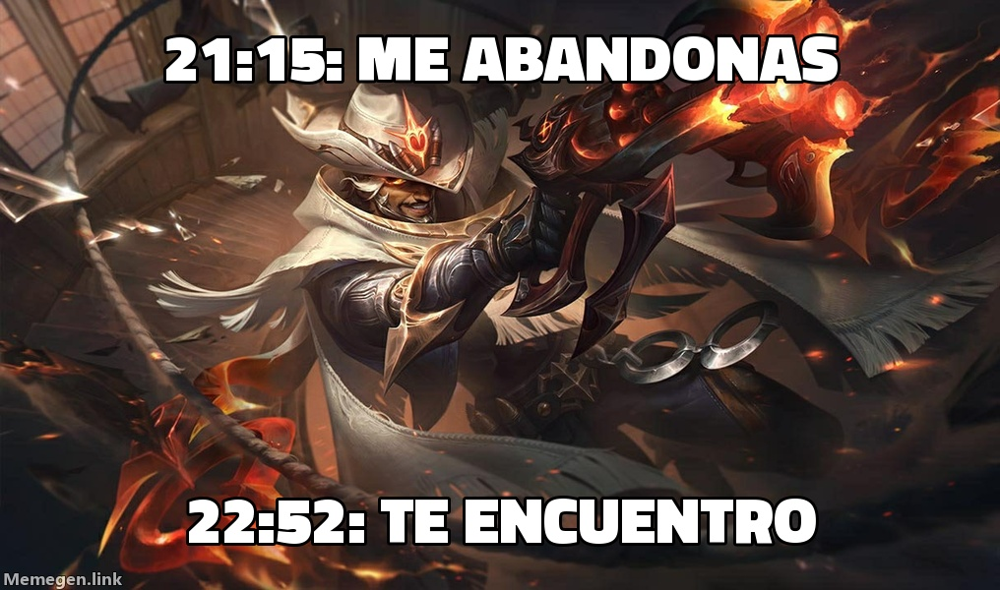

«Ocho veces me dejó tirado. A las once me tocó a mí»
Akshan, Centinela renegado, firma ante el Sindicato su versión de la noche que pasó con GSJoseador, y la que pasó contra él.

El Sindicato difunde íntegro el comunicado que Akshan entregó esta madrugada en la Comisaría de Piltover, con la capa todavía sucia de la calle central.
Primero. A las 21:15 el señor GSJoseador me eligió para el carril central contra una Ahri. En veinte minutos morí ocho veces, tres de ellas en el mismo rincón, sin un asesinato y sin una sola asistencia. Hice el 22,4 % del daño de mi equipo y no sirvió para matar a nadie, que es como disparar al aire en un funeral.
Segundo. Hora y media después volví a la Grieta. Esta vez en el otro equipo, y en su calle. Él llevaba Xerath. Yo terminé con once asesinatos.
Tercero. El Sindicato aclara que no fue venganza. Fue formación continua.
Cuarto. Consta que el señor GSJoseador hizo en esa partida el 32,4 % del daño de su equipo y puso treinta y cuatro pings. Perdió igual. El daño es suyo. La partida, mía.
Akshan no solicita indemnización. Ya la cobró en el minuto veinticinco.